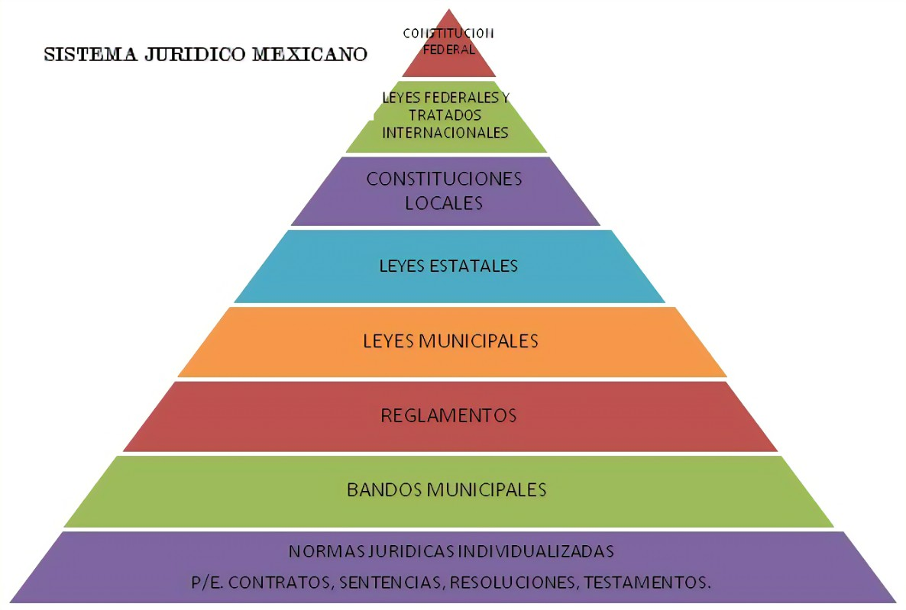

Sistema Jurídico
El sistema jurídico es el conjunto de normas, principios e instituciones que rigen una comunidad o sociedad. Este sistema está diseñado para regular el comportamiento humano, resolver conflictos y establecer un orden social. Los sistemas jurídicos varían considerablemente entre diferentes culturas y países, pero todos comparten ciertos elementos fundamentales. A continuación, se exploran en detalle los conceptos, características, implicaciones y relevancia de los sistemas jurídicos en la práctica.
Conceptos Principales
El sistema jurídico se basa en la idea de proporcionar un marco estructurado y coherente de normas y principios que guíen el comportamiento y las interacciones sociales. Los principales conceptos de esta teoría incluyen:
- Normas Jurídicas: Reglas que establecen los derechos y deberes de los individuos y las instituciones dentro de una sociedad.
- Principios Jurídicos: Valores fundamentales que informan y orientan la interpretación y aplicación de las normas jurídicas.
- Instituciones Jurídicas: Organismos y estructuras, como tribunales y legislaturas, encargados de crear, interpretar y aplicar el derecho.
Características del Sistema Jurídico
- Coherencia: Las normas y principios dentro de un sistema jurídico deben estar interrelacionados y ser consistentes entre sí.
- Jerarquía Normativa: Existe una estructura jerárquica donde algunas normas tienen mayor autoridad que otras (por ejemplo, la constitución sobre las leyes ordinarias).
- Universalidad: Las normas jurídicas deben aplicarse de manera general y uniforme a todas las personas dentro de la jurisdicción del sistema.
Implicaciones del Sistema Jurídico
- Orden Social: El sistema jurídico es fundamental para mantener el orden y la estabilidad en la sociedad.
- Resolución de Conflictos: Proporciona mecanismos para la resolución pacífica y justa de disputas.
- Protección de Derechos: Garantiza la protección y el ejercicio de los derechos y libertades individuales.
Relevancia en la Práctica Jurídica
El sistema jurídico tiene una gran relevancia en la práctica jurídica contemporánea. Algunos de sus impactos incluyen:
- Elaboración de Normas: Influye en la creación de leyes y regulaciones que sean coherentes y efectivas.
- Interpretación Judicial: Los jueces utilizan los principios del sistema jurídico para interpretar y aplicar las leyes de manera justa y equitativa.
- Educación Jurídica: La formación de abogados y juristas se basa en un entendimiento profundo de los elementos y funciones del sistema jurídico.
Representación

Video
Bibliografía
- Raz, J. (1979). The Authority of Law: Essays on Law and Morality. Clarendon Press.